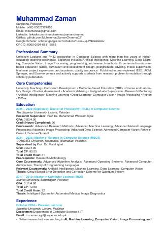

About
I'm a Computer Science lecturer and AI researcher based in Pakistan. I teach machine learning, computer vision and image processing, and I supervise postgraduate research. My work spans deep learning for biomedical imaging, attention and transformer architectures, interpretable AI and quantum-enhanced computing.
My papers appear in IEEE, ACM, Springer and Elsevier venues, often as corresponding author. At Superior University I serve as Post-Graduate Programs Coordinator for Computer Science and Convener of the Departmental Research Ethics Committee, and I review for more than twenty international journals and conferences.
Research impact
Citation indices from Google Scholar.
Cited byUpdated
| All | Since |
|---|
Citations per year
Research interests
Publications
Experience & education
CV & documents
Official notifications and certificates, available to view or download.

Curriculum Vitae
Full academic CV with teaching, publications, supervision, service and memberships (10 pages, PDF).
References are available on request.
Teaching & service
Courses taught
Peer review
Open to collaboration, postdoctoral roles and invited talks.
The quickest way to reach me is by email.